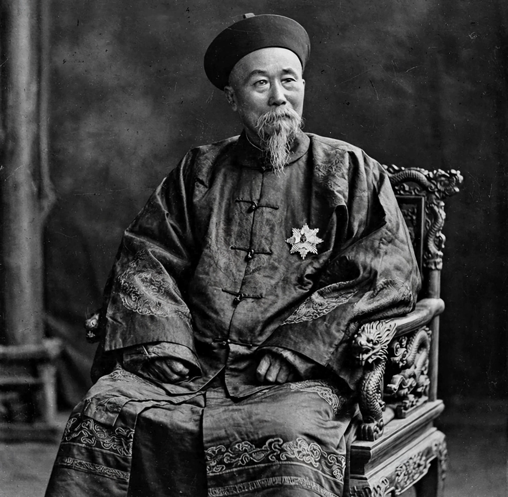

Li Hongzhang (15 February 1823 – 7 November 1901) was a Chinese statesman, general and diplomat of the late Qing dynasty. He suppressed the Taiping and Nian rebellions, led the Self-Strengthening Movement in Zhili, and negotiated many of China's treaties, earning a reputation abroad comparable to Bismarck's.

A jinshi of 1847 and protégé of Zeng Guofan, Li raised the Huai Army in Anhui, retook Suzhou and Shanghai from the Taiping with support including the Ever Victorious Army, and later crushed the Nian.
As Viceroy of Zhili (1870–1895) he built arsenals, mines, telegraphs and the Beiyang Fleet, founded a military academy at Tianjin, and handled relations with Korea, Japan and the West.
Li signed the Treaty of Shimonoseki (1895) after the First Sino-Japanese War — surviving an assassination attempt in Japan — toured Russia, Europe and America in 1896, and negotiated the Boxer Protocol in 1901 shortly before his death.